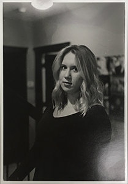
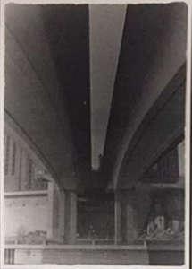
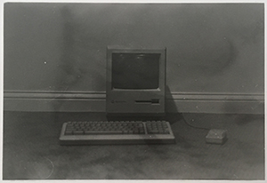
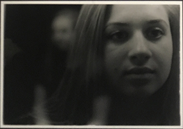

Alanna Carlson - Portrait

Wabasha Street Bridge - Saint Paul, MN

Macintosh Plus - 1986

Bella Tambornino - Double Exposure
Film photography is a passion of mine. The process of developing and creating the photographs you take is much different than snapping a digital photo. Here are just four examples of different styles I use. From a simple portrait, to a double exposure, to objects in a studio, to cityscapes.